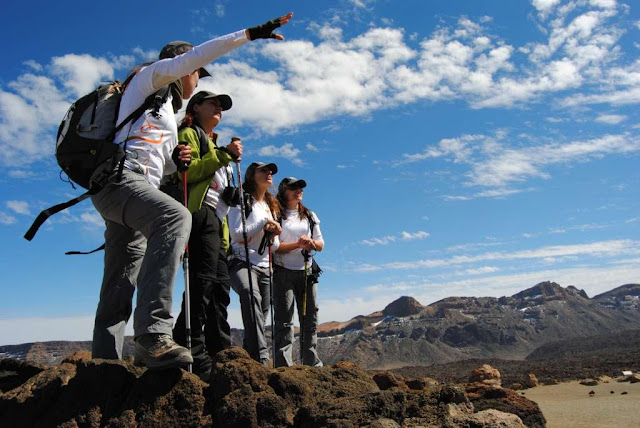

Haz que tu viaje sea inolvidable
Dejanos guiarte en tu aventura
¿Te estas preguntando porque elegir una agencia de viajes? Hasta la pandemia del coronavirus viajar se facilitó mucho y llegó a ser muy accesible para muchos. Se podía comprar vuelos, reservar coches de alquiler, apartamentos y hoteles con un par de clics en el internet. Es posible que una vez que acabe la pandemia, la gran parte de costumbres volverá a ser como antes y con toda la información que permanece en la red, muy rápido te encontrarás con las siguientes dudas: ¿No hay ya demasiada información?, ¿Cómo elegir lo mejor?, ¿Cuánto tiempo dedicar en la preparación del viaje y cuántos nervios si algo no va como planeado…? Y poco a poco te irás planteándote más preguntas: ¿Cómo hacer con el idioma una vez que esté allí?, Aquí te hemos preparado las razones más importantes sobre el porque de elegir una agencia de viajes en vez de ir a viajar por tu propia cuenta.
¿que opina la gente de nosotros?
lee algunos de los testimonios de nuestros visitantes

Una gran experiencia. El guía era absolutamente maravilloso y conocedor y tuvimos un delicioso almuerzo tradicional boliviano proporcionado al final del recorrido, antes de regresar a La Paz. La recogida y entrega fue perfecta, ya que lo tienen descrito en su itinerario
Mia Skylar

Escuche la misteriosa desaparición del imperio después de prosperar durante un milenio y disfrute de la atención indivisa de su guía en este tour privado. Se incluye el conveniente servicio de transporte de ida y vuelta desde su hotel en La Paz
John Sant
Calle Capitán Ravelo No. 2101-(591-2) 2442727-Calle 20 de Calacoto # 1383, entre Av. Ballivián y Julio Patiño
2026 Mi Sitio Web. Todos los derechos reservados.